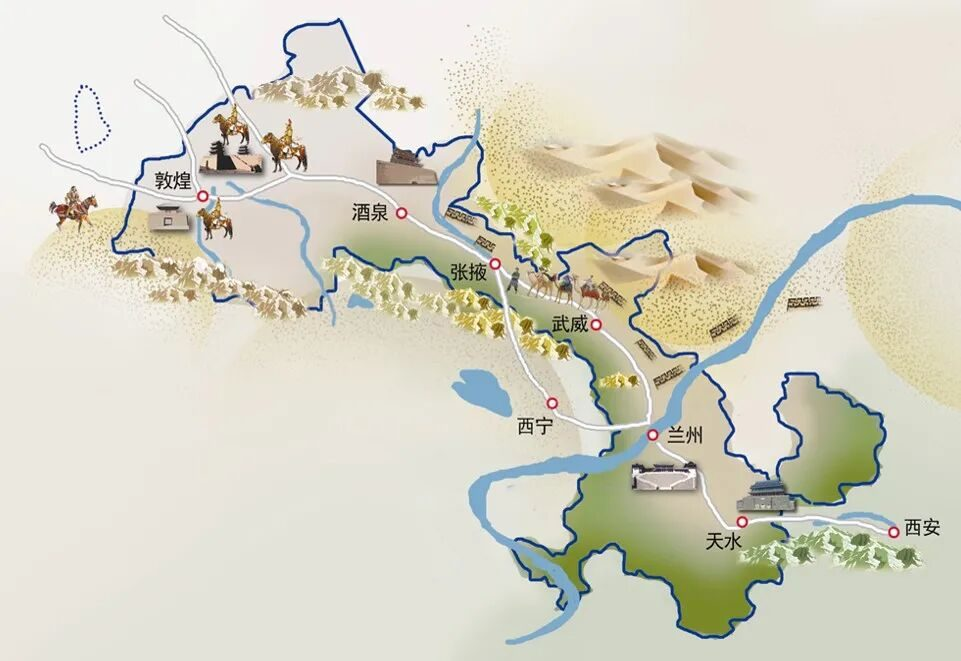
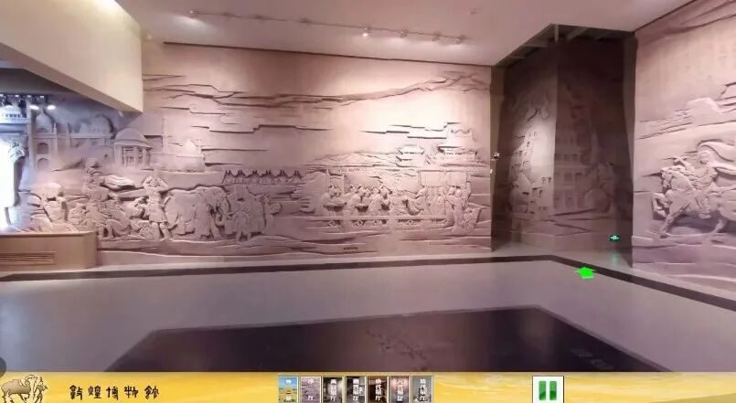
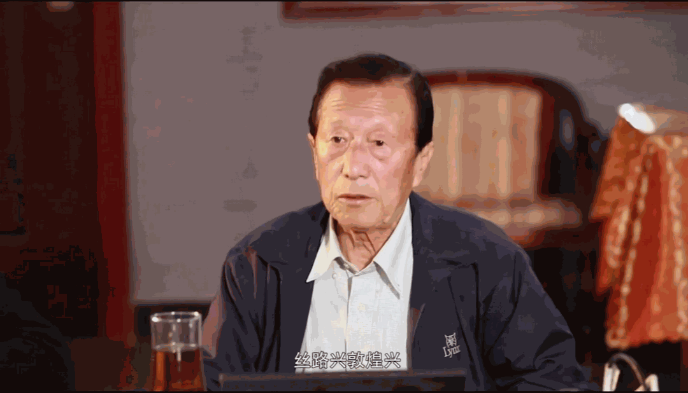
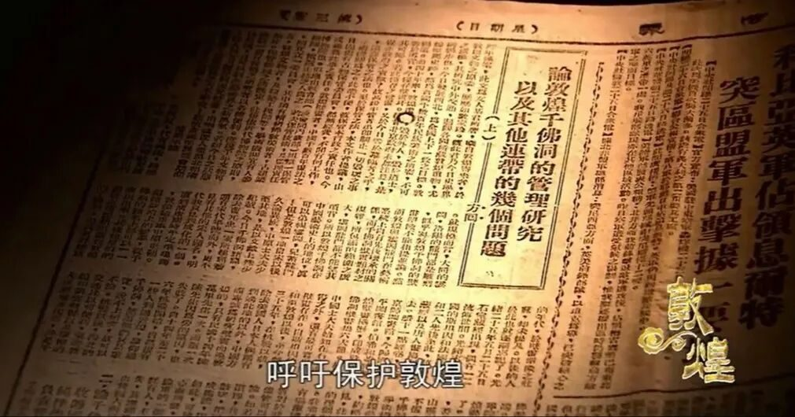
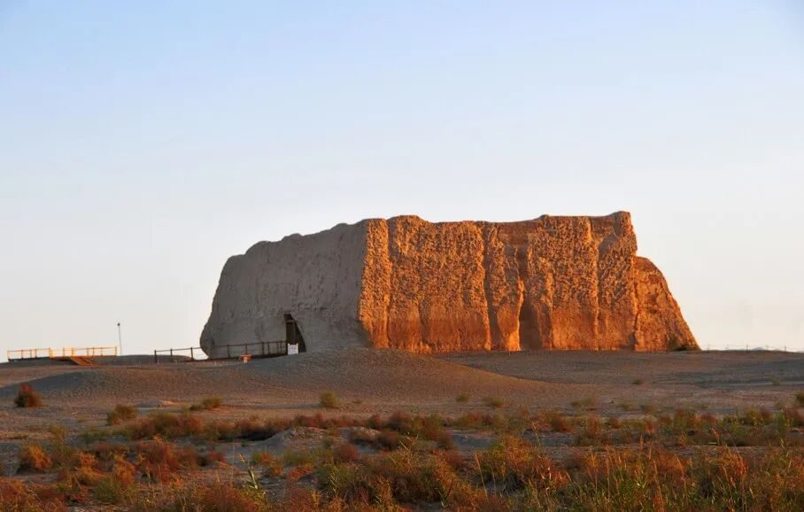
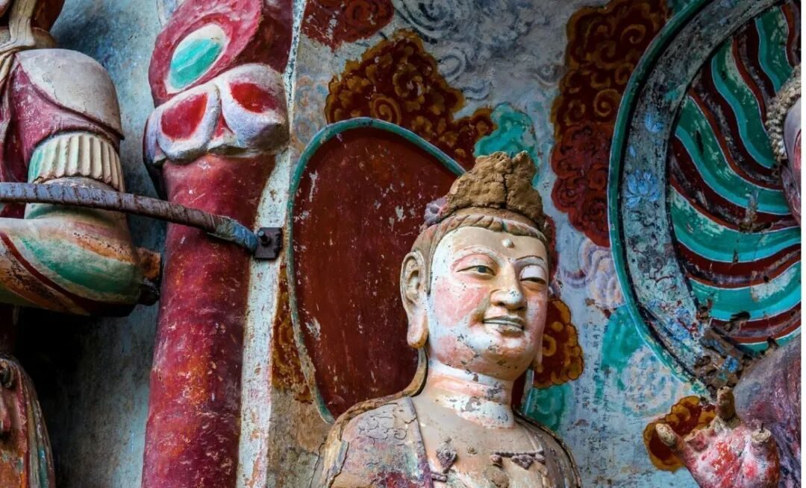
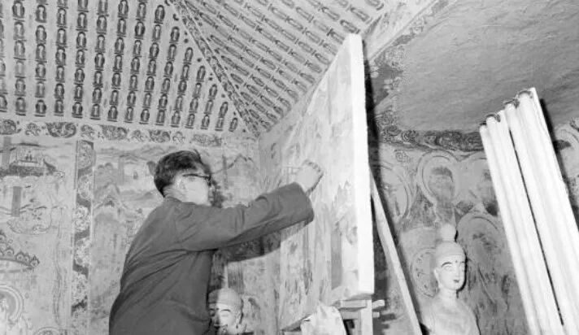
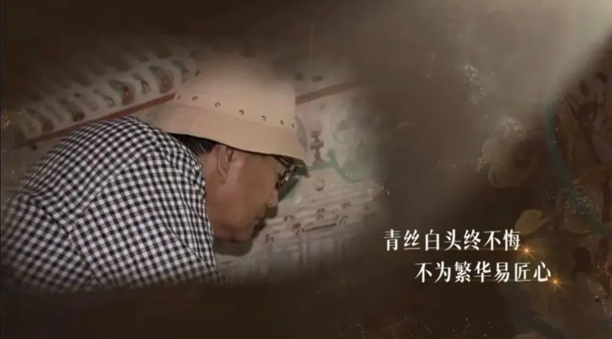
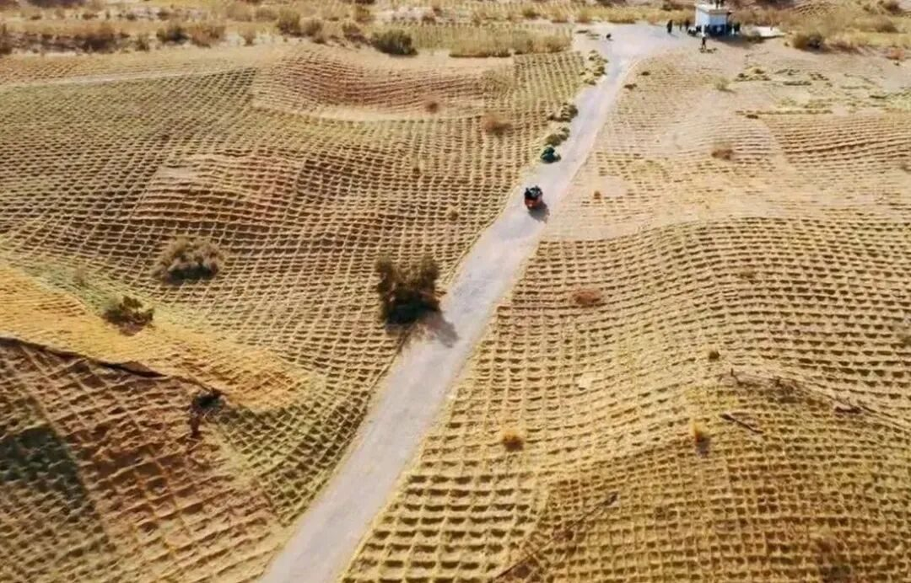
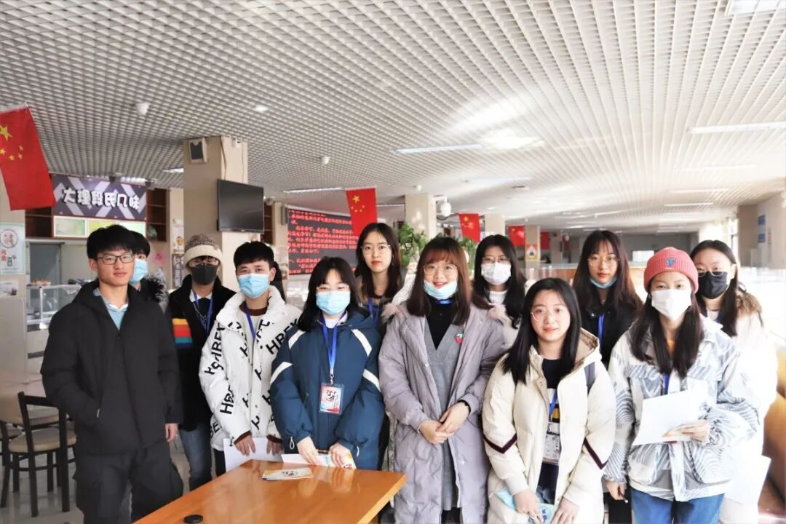

【煌然成篇·五】大漠尽头是你
大漠尽头是你
千年敦煌熠熠生辉，行者们穿越千年风沙中的戈壁，细数这座文化宝藏的岁月沧桑。

参观敦煌城市规划馆的云展馆，让我看见了不一样的数字敦煌。
聆听郑炳林教授的讲座，让我见证了敦煌与丝绸之路的情缘。
观看《敦煌》纪录片，让我更敬仰敦煌岁月的守望者们。
谛听荣主任和吴老师的叙述，让我更折服于敦煌的文化魅力。


大漠敦煌，是包容的。中西方各种文明在敦煌汇聚、融合，创造出了具有敦煌气派、敦煌风格、敦煌特色的辉煌灿烂的文化，形成了敦煌独特的文化性格、文化传统和文化精神，展示了中华民族的文化自信。敦煌文化融合了多种文化营养，形成了“美美与共”的大和谐文化。正如习主席所言，只有充满自信的文明，才会在保持自己民族特色的同时包容、借鉴、吸收各种不同文明。

大漠敦煌，是坚定的。即便经历了社会变迁复杂混乱的时代，见证过不少的杀戮征伐、穷困潦倒、寒冷饥饿的画面，敦煌文化的本心却没有过改变。无论在洞窟之外，自然环境有多么恶劣、单调，社会环境有多么复杂、动荡，在洞窟里，总是能够看到缤纷灿烂、活力无限的敦煌壁画。敦煌文化坚守着“崇德向善”的价值取向，历经千年，从未动摇。


大漠敦煌，是多情的。无论是千年之前那些苦苦的在洞窟内雕刻的画匠，还是如今依然在坚守敦煌的人，都阐述着一种信念：对敦煌不离不弃的虔诚。荣主任的娓娓道来，更是让我看到了千里之外敦煌人文精神：开放、包容、向善、守正。敦煌元素遍布在敦煌的大街小巷之中，亦体现在每一个普通的敦煌居民身上。即使我没有亲身到达敦煌博物馆，却看到了敦煌文化与人文精神的相辅相生，让我对敦煌有了更强烈的向往。


大漠敦煌，是独特的。作为“华戎交汇之都”，作为丝绸之路的咽喉锁钥，作为东西方各民族相互交流的通道，敦煌从来都是独特不凡的，肩负着打造丝绸之路经济带的重要使命。在这种背景下形成的敦煌文化，一方面保持着中原传统文化的主体地位；另一方面又不断在开放纳新中进行文化再创造，逐渐形成了丰富内涵和独特性格。

大漠尽头是你，千年敦煌。
大漠尽头是行者，步履匆匆。
大漠尽头是我们，对文化深沉的爱。
这是我第二次踏上行者之旅，经过招募、面试、见面会，我庆幸自己终与你们相遇，能携手拾起敦煌文化碎片。我亦遗憾于因疫情不能共赴敦煌，如果可以，愿与君相看大漠夕阳，共赏悠悠驼铃。

来源 | 行者无疆实践团
文字 | 王小玉
排版 | 吕丰元
审核 | 康艳虎 张清雅
行者无疆实践团
QQ：2758025831

随行者一起认识世界
长按二维码